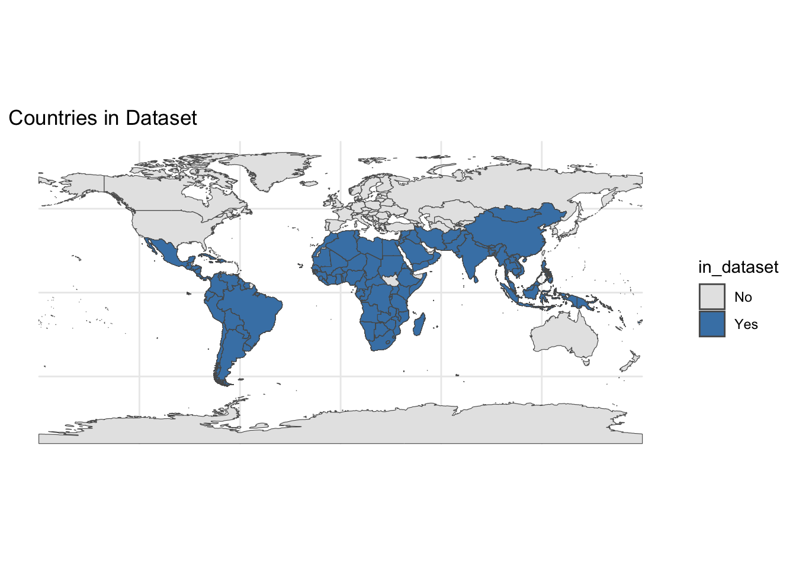
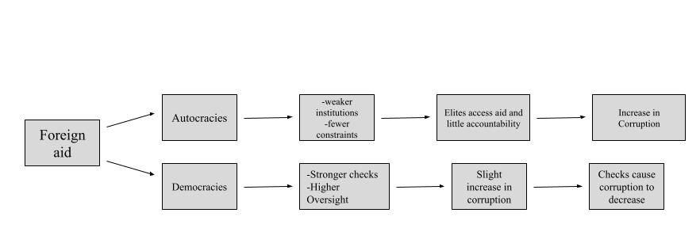
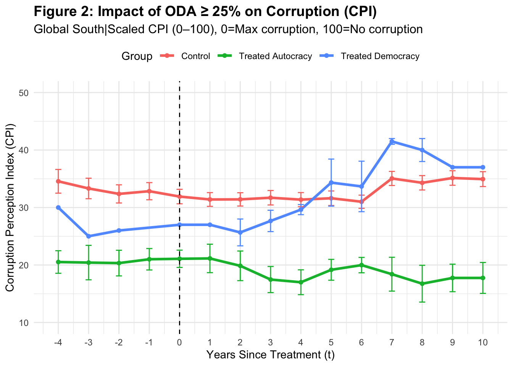
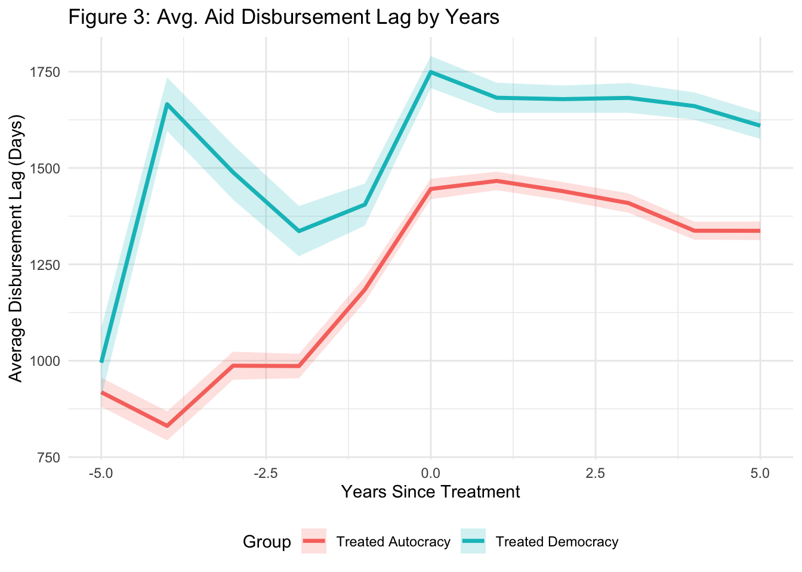
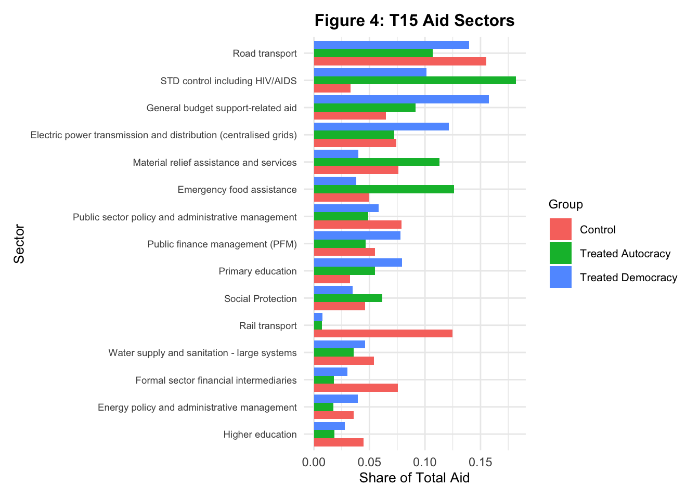
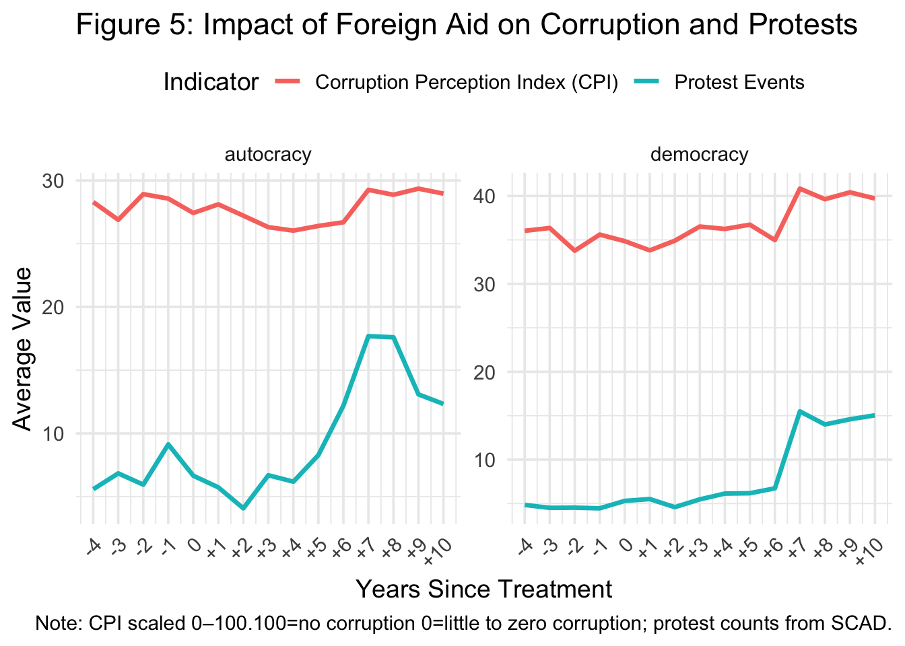

The Effect Of Foreign Aid on Corruption in Varying Regime Types
Table of Contents
- Background
- Context
- Research Question
- Literature
- Empirics
- Argument
- Data
- Methods
- Figures
- Findings
- Discussion
- Conclusion
- Limitations and Critiques
Background
Background
Context
Focus on Global South: Latin America, Sub-Saharan Africa, etc.
Low income Countries: More affected by aid, variance in impacts depending on income levels

Background
Research Questions
Foreign aid continues to be a primary tool of global engagement
Few studies fully integrate regime type, donor leverage, and transparency outcomes all together.
Can lead to more of an understanding in terms of how to fulfill donor goals in various regime types
Background
Research Questions
Today:
How does foreign aid affect corruption in varying regime types?
Literature
Literature
- Camp One: More corruption in autocracies, minimal to no impact on democracies
- Kono et al., 2009
- Nieto-Matiz et al., 2020
- Kono et al., 2009
- Camp Two: Aid always causes corruption; regime type has no impact
- Knack, 2003
- Kaylvitis et al., 2012
- Bader et al., 2001
- Knack, 2003
- Camp Three: Donor intent matters, not regime type
- Bermeo, 2011
- Brown, 2005
- Bermeo, 2011
Empirics
Empirics
Argument and Theory
Autocracies: Lack of voter base leads to uncontrolled growth in corruption
Democracies: Corruption increases, need to appease voter base decreases it

Empirics
Methods
This study utilizes a differences and differences approach for the main Figure, Figure 2. The goal of this figure is to see the direct affect of corruption on the CPI value after 25% of the GNI is made up of ODA in the selected countries. For the remaining figures (3-5) , I utilized multiple forms of quantitative analysis to explain the mechanisms behind Figure 2.
Sources: Transparency International: CPI, World Bank: Income Level and Percent GNI of ODA, V-Dem: Regime Classification, CRS: Total ODA disbursements over time, The Strauss Center: Civil Unrest
For Figure 1: I utilized the following equation
\[ \text{CPI}_{it} = \sum_{k = -4}^{10} \beta_k \cdot \mathbb{1}(\text{EventTime}_{it} = k) + \alpha_i + \gamma_t + \varepsilon_{it} \]
\(\text{CPI}_{it}\): is the corruption score for country \(i\) in year \(t\),
\(\mathbb{1}(\text{EventTime}_{it} = k)\): indicator for each year relative to treatment.
\(\alpha_i\): Country fixed effects
\(\gamma_t\): year fixed effects are included to account for time-invariant country characteristics and common shocks.
Empirics
Figures

When looking at Figure 2, it can be seen that countries that received the “treatment” start to and continue to experience changes in CPI levels

This aid lag could explain why it takes longer for the ultimate change democracies experience (less corruption) takes several years to occur

The differences in aid allocation could explain why it takes longer for Autocracies to change. A majority of the aid in autocracies goes to problem management while a majority of aid in democracies goes to governmental sectors leading to more quick of a change in governmental corruption levels.

As can be seen above as protests occur in democracies, their corruption levels immediately decreases (CPI increases). This is due to the fact that democracies are reliant on the approval of their people to remain in power. Autocracies on the other hand seem to face no effects even as protests increase.
Empirics
Findings
Figure A: two contrasting trends:
- Democracies: corruption decreases after an initial spike,
- Autocracies: corruption steadily worsens following the aid shock
Figure D: democracies have more of a lag: shows institutional checks, shows why corruption improvement in figure A is not immediate in democracies
Figure E:
- Autocracies: Aid goes in short term sectors,
- Democracies: Aid goes to government
Figure F: Protests in both
- Democracies: decrease in corruption
- Autocracies: corruption continues to increase
Discussion
Discussion
Large aid inflows reshape governance differently across regimes
Democracies experience initial corruption shocks but institutions stabilize over time
Autocracies face entrenched corruption as repression and weak oversight persist
Public protest strengthens accountability in democracies but is suppressed in autocracies
Sectoral allocation determines outcomes: education and infrastructure enhance transparency, fungible aid fuels rent-seeking
Aid effectiveness is contingent on political context, not volume alone
Donors must align disbursements with institutional capacity and oversight to prevent misuse
Conclusion and Application
Conclusions and Applications
Conclusions:
- The impact of aid is shaped by regime type
- Autocracies experience entrenched corruption with no reversal
- Democracies lessen corruption over time in order to satisfy the voter base, due to the voter base’s protests
- Political context determines whether aid strengthens institutions or fuels rent-seeking
Applications
- Policy Design: Target aid to governance-enhancing sectors with strong oversight
- Donor Strategy: Condition aid on transparency and institutional reform
- Civic Engagement: Policy makers should support mechanisms that amplify protests and accountability in democracies
Limitations and Critiques
Limitations and Critiques
Difference-in-Differences event study assumes that treated and control countries would have followed similar paths in the absence of high ODA inflows
Excludes sub-national differences:
- Somaliland
CPI is a perception-based measure, which may lag behind actual corruption changes or be biased by media coverage and international scrutiny.
Ignores Conditionality
Future studies could look at:
- Sub-national variation
- Different economic levels
- Donor type: Members of OPEC versus external sources i.e China
Thank you!
Email: mariam.sahar09@gmail.com
Website: https://msaharsajid.github.io